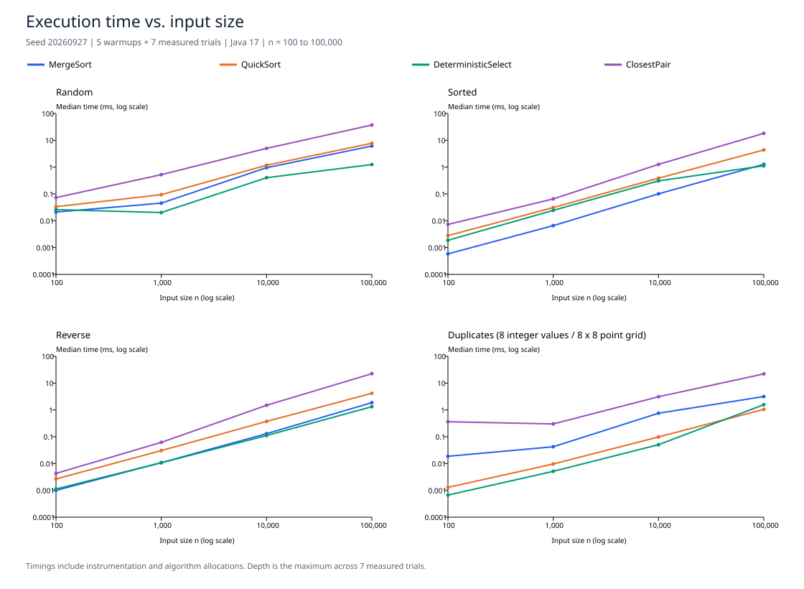

<!doctype html><html lang="en"><meta charset="utf-8"><title>Measured results</title><style>body{margin:0;padding:24px;background:#f3f6fb;color:#152337;font-family:Arial,sans-serif}main{max-width:1000px;margin:auto}h1{font-size:30px;margin:0 0 12px}p{color:#536377;font-size:16px}pre{white-space:pre-wrap;overflow-wrap:anywhere;background:#142235;color:#e1f0fc;border-radius:14px;padding:28px;font:16px/1.7 monospace}img{display:block;width:760px;max-width:100%;background:white;border-radius:12px}small{color:#536377}</style><main><h1>Measured results</h1><p>64 configurations · 448 measured trials · Actual CSV data</p></main></html>